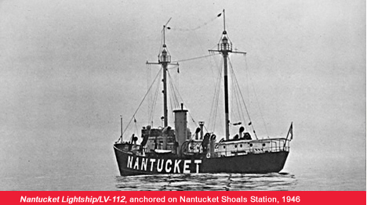
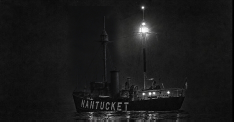
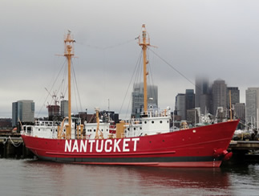
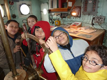

United States Lightship Museum
Nantucket Lightship / LV-112
For 39 years she guided transoceanic shipping through some of the most treacherous waters in the world. Today, help us save and preserve this National Historic Landmark.
National Historic Landmark · Designated 1989, National Park Service
A floating sentinel that became the first symbol of America for thousands of immigrants.
For 39 years, Nantucket Lightship / LV-112 guided transoceanic shipping to and from U.S. east coast ports, through some of the most treacherous shipping lanes in the world. She was the first symbol of America encountered by thousands of immigrants. Many famous vessels such as the SS United States, the Queen Mary, Normandie and naval cargo vessels depended on her as a navigational aid.
Now it’s our turn to save and preserve this unique historic and venerable vessel. With the help of the general public—who are responding with gifts of all sizes—a fundraising effort is underway to restore LV-112 back to her former glory.
Explore the Museum
Discover LV-112

About LV-112
The history of a National Historic Landmark and the rescue effort to save her.
Learn more →
Photo Gallery
Historic and contemporary photographs of the lightship and her crews.
View gallery →
Visiting Hours
Tour the ship in East Boston, Saturdays in season — or by appointment.
Plan your visit →
How to Help
Donate, volunteer, or become a member to support the restoration.
Get involved →Help preserve a National Treasure
Join the United States Lightship Museum today and help us preserve the world’s most famous and largest U.S. lightship ever built.